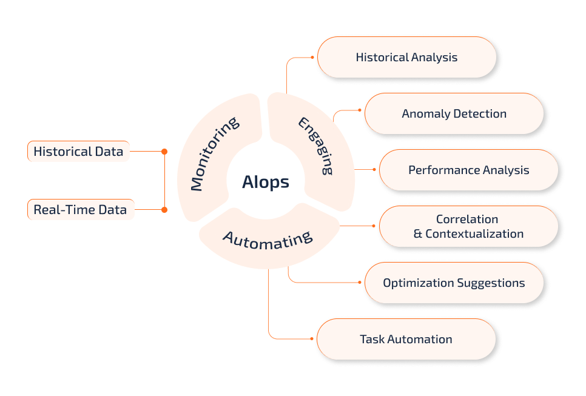
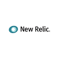
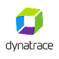
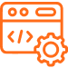

Are you a business looking to transform the way you handle your IT operations with AIOps? Then our end to end AIOps consulting service is exactly what you need to optimize your IT operations with the power of artificial intelligence. With AIOps you can improve the efficiency, reliability and performance of your IT systems by automating routine tasks, detecting anomalies and providing predictive insights. As an AI development company and AIOps experts help businesses like you make the most out of your resources and help you build scalable systems through AIOps. Our team of industry leading AIOps experts work closely with you to understand the unique IT requirements of your business and suggest detailed plans to make them more efficient and cost effective with our full fledged AIOps consulting services.

End-to-End AIOps Consulting Services for Businesses
AIOps in a nutshell is the use of artificial intelligence for IT operations which involves implementing AI technologies like machine learning and data science to enhance and automate your IT operations through AI agent development. The key components of AIOps are data aggregation, real time processing and automation. Through data aggregation you will be able to collect and integrate data from various IT environments which includes logs, metrics and events. With real time processing you can analyze data as it comes in and identify patterns and anomalies effectively. Automation is a big area we can help you with our AIOps consulting services where you will be able to implement automated responses to the issues you identify and reduce the need for intervening manually. Among the benefits you get as a business is the enhanced operations efficiency which you can achieve through the automation of routine tasks and frees up your IT staff to focus on more strategic initiatives. You also get to ensure that your users get the best experience possible while using your products and services.
Streamlined AIOps Consulting Solutions For Growing Businesses
We offer businesses end to end AI consulting services for all your needs and help you optimize your IT operations with the help of artificial intelligence. Our AIOps consulting solutions include predictive analytics where you can utilize machine learning to forecast potential issues in your system before they occur. We can also help you with anomaly detection where you can identify any irregularities in your system’s behavior which could tell you more about underlying problems. Through AIOps we can also help you implement automated incident response systems which is an AI driven solution that can automatically address common IT incidents without any human intervention. The circle is complete with performance monitoring for your IT systems where you can maintain continuous oversight of your system metrics to make sure that your systems are operationally optimal. Our AIOps consulting services also focus greatly on customization and we design tailored solutions and AIOps strategies that fit the unique needs of your business.
High-End AIOps Solutions For Seamless Customer Experiences
Our consulting services for AIOps cover everything you need as a business for superior IT operations no matter what size your business is. We also have deep expertise working with leading AIOps platforms like IBM AIOps, New Relic One and Dynatrace.


- IBM AIOps: It offers powerful tools to detect anomalies, predict outages and prescribe solutions to proactively avoid these issues.
- New Relic One: It is a cloud based observability platform which allows you to monitor application performance across the entire tech stack.
- Dynatrace: The solution features an AI engine called Davis which can deliver precise answers and provides you with automation for modern cloud environments.
One of the key features you can leverage with our AIOps consulting services is cross domain data ingestion where you can analyze data from various sources and get comprehensive insights. You can also use topology mapping where you can easily understand the relationships and dependencies within your IT assets. We can also help you implement systems that can identify patterns among events to pinpoint the root cause using event correlation. You can also automate remedial measures for any issues by implementing automatic fixes for known which in turn helps you reduce downtime.
We Help You Choose The Right AIOps Open Source Platform For Your Business
As part of our full scale AIOps consulting services we help you select open source AIOps platforms for monitoring, alerting and automating your IT operations without having to worry about high costs you may have to deal with when using proprietary solutions. These are powerful tools that can enable your business to detect anomalies, predict failures and optimize IT operations using analytics powered by AI.
- It is an open source monitoring system which was developed by SoundCloud and can be used for time series data collection and analysis.
- It is widely used for monitoring and alerting in cloud native environments in real time.
- It comes with a multi dimensional data model which stores data in key value pairs and allows for flexible querying.
- It uses a powerful query language called PromQL which allows you to efficiently retrieve and manipulate time series data.
- It also allows for dynamic scaling and you can deploy it on Kubernetes environments.
- With our AIOps consulting services we help businesses leverage Grafana which is an open source visualization tool which integrates with various data sources.
- It gives you interactive dashboards for data analysis and monitoring in real time.
- It supports multi source integration with Prometheus, MySQL, PostgreSQL, AWS CloudWatch and more.
- You also get highly configurable dashboards with graphs, heatmaps and tables.
- It supports user role based access control or RBAC which enables multi user access securely.
- It is an open source platform for monitoring networks, applications and services for enterprises.
- It also offers you data collection, visualization and alerting functionalities in real time.
- Our AIOps consulting services include helping you leverage Zabbix’s agent based and agentless monitoring which supports monitoring through installed agents or SNMP, ICMP, IPMI and JMX protocols.
- It also provides you with automated anomaly detection which uses AI driven analytics to detect unusual patterns in your system behavior.
- It is highly scalable and flexible and can handle thousands of monitored devices across your IT infrastructure as well as providing you with support for integrating APIs and third party tools.
- Nagios is a very powerful open source monitoring system that can help you track the performance of servers, switches, applications and network services.
- As part of our AIOps consulting services we can help you leverage Nagio for things like active and passive monitoring for both on demand checks and external event based monitoring.
- It provides you with thousands of plugins built by the community which enhance functionality.
- It also allows you to monitor your IT infrastructures that are geographically distributed.
- It also helps you implement backup nodes to prevent any interruptions to your monitoring operations.
Full-Scale AIOps Strategy Consulting
We travel together with you on your journey to optimizing your IT operations with our end to end AIOps consulting services. Our services cover everything you need to run smart IT operations or even build your own AI for your business starting from strategic planning to optimizing your systems for performance.
At this stage we conduct a current state assessment where we analyze your existing IT operations to identify any pain points and opportunities for integrating AIOps. This stage also covers the vision and goal setting where we help you define clear objectives for what your organization aims to achieve by integrating AIOps. Then we help you develop a detailed roadmap which outlines a phased approach for adopting AIOps for your business which will include timelines and milestones.
The next stage in our AIOps consulting services is implementation support which starts with the technology selection. Here we assist you in choosing the right AIOps tools and platforms that align with the needs of your business. Another major part is the process of integrating AIOps into your existing system where we ensure that our solutions align seamlessly with the existing IT workflows and processes that you already have. We also help your teams adapt to AIOps solutions by providing full training and process refinement.
Helping you optimize the performance of your IT operations is a major part of our AIOps consulting services. We help you refine algorithms and automation rules for enhancing your performance and support your continuous monitoring efforts. Our experts also help you plan for scalability and ensure that our AIOps solutions grow with your expanding IT infrastructure. Another key area where we help you is for measuring your KPI and ROI where we define key performance indicators to track the effectiveness of your AIOps implementation.
Seamlessly Hire AIOps Consultant For Your Organization
Seamlessly transform your IT operations by hiring an experienced and skilled expert from our AIOps consulting team. We provide you with flexible hiring options as one of the top AI companies to use our experts for your business and implement the power of artificial intelligence to improve your IT operations.
Discover Our Technology Stack For AIOps Consulting
We work the latest and the most robust technologies and can help you supercharge your IT operations with AIOps.
- TensorFlow: An open course framework for machine learning which can be used for building deep learning models for predictive analytics and for detecting anomalies in IT systems.
- PyTorch: It is a flexible and open source machine learning framework which can be used to power production in IT operations powered by AI.
- Scikit-Learn: It is a lightweight Python ML library we use in AIOps consulting which can be useful for implementing classification, regression and clustering algorithms for event correlation and detecting patterns.
- Apache Kafka: it is a distributed streaming platform that helps ingest data from multiple IT sources in real time which facilitates event driven architectures in AIOps.
- Splunk: It is a very popular observability platform for AIOps.
- Datadog: A powerful cloud monitoring and security platform for full stack observability.
- Ansible: An open source tool for IT automation which allows you to provision infrastructure, manage configurations and deploy applications.
- Puppet: We also use Puppet in our AIOps consulting and it helps you manage configurations, enforce compliance and streamline your IT operations.
- ServiceNow: It is a cloud based platform for ITSM which helps you automate IT workflows, manage incident response and enhance service delivery in enterprises.
- Jira Service Management: Atlassian’s ITSM solution that gives you a centralized platform for tracking incidents, managing service requests and automating workflows.
We Serve Diverse Industries With Our AIOps Consulting
AIOps is revolutionizing the way businesses handle their IT operations and its impact crosses various industries. We help you leverage artificial intelligence, machine learning and automation with our end to end AIOps consulting solutions and enable you to enhance your system reliability, reduce your downtime and improve efficiency.
Today financial institutions rely heavily on AIOps to detect fraud, optimize their IT infrastructure and enhance customer experiences while ensuring that they comply with regulatory requirements. AIOps powered machine learning models can analyze patterns in transactions in real time and detect anomalies and prevent fraudulent activities before they happen. You can also automate monitoring tools and detect any failures in your IT infrastructure or network outages before they impact key banking services. Additionally, AI driven automation also helps you ensure compliance with standards like GDPR, PCI-DSS and SOX.
Through our AIOps consulting services we help businesses in the healthcare space enhance their cybersecurity and ensure compliance by implementing things like Ai driven threat detection which can identify unauthorized access to electronic health records. You can also seamlessly automate compliance tracking which ensures that you comply with regulations like HIPAA and GDPR. We can also help you implement optimized IT infrastructure for your medical systems with predictive analytics which prevents failures in critical IT systems like patient monitoring devices and telehealth platforms. Additionally, you can also ensure that your supply chain and inventory management is efficient through AI powered automation which allows hospitals to have sufficient stock of essential medicines and medical equipment.
For businesses in the retail and e-commerce space our AIOps consulting services can help you deliver seamless shopping experiences for your customers, reduce website downtime and optimize inventory management. We can help you implement AI driven tools for monitoring your IT systems so that you can detect things like slow page load times and website errors so that you can always ensure that your customers get seamless shopping experiences. You can also enable AI powered algorithms to give your customers personalized recommendations for products and implement chatbots that can provide real time assistance to customers on a 24/7 basis.
We can help you transform your manufacturing business with AIOps consulting where you can optimize your production processes, prevent system failures and enhance supply chain visibility. You can effectively implement AI driven monitoring tools for detecting early signs of machine failure which reduces unplanned downtime in your operations. AI powered automation also helps you track raw materials in real time through the supply chain. You can also implement demand forecasting systems which can help you manage your inventory levels efficiently. AI powered process automation also helps you on your factory floor letting you improve efficiency, monitor for quality control issues in real time and reduce defects which contributes to the consistency of your products.
Why Choose Us As Your AIOps consulting Company?
Through our AIOps consulting services we empower businesses to make the most out of their IT operations and streamline it to achieve maximum efficiency.




Streamline Your IT Operations With Our AIOps Services
AIOps is a breath of fresh air powered by artificial intelligence that allows you to make your IT operations smarter. Through our full scale AIOps consulting services we help businesses like you implement AI into your IT operations and improve your operational efficiency, detect issues before they happen and provide your customers with great experiences. AIOps is not just for large enterprises and in fact AI technologies have become so accessible now that we can help you integrate AIOps for your IT operations tailoring your solution for the specific needs of your business. AIOps also goes a long way when it comes to ensuring that your business adheres to global regulatory standards and industry best practices. Stay ahead of the curve and implement AI into your IT operations to provide your customers with the experience they deserve and you with less things to worry about. Everything starts with a simple discovery call with one of our AIOps consultants.
Frequently Asked Questions
AIOps consulting is a service we provide you to help you implement artificial intelligence into your IT operations with detailed consultations to provide you with tailored services.
AIOps allows you to automate parts of your IT operations and implement intelligent solutions to streamline your systems and detect problems before they happen. If you’re in an industry like finance, healthcare or legal AIOps can also ensure that you always adhere to global regulatory standards.
The major benefits of AIOps include the ability to implement and achieve things like automated incident detection and resolution, proactive problem prevention, improved IT efficiency and so on.
Yes, through our AIOps consulting services we help you streamline your IT operations with AI driven solutions for tackling issues, managing IT resources and much more reducing your operational and AI development cost.
The time it would take to implement AIOps for your business would depend on the current systems that you are running. You can speak with our expert consultants to get a tailored quote for your business.